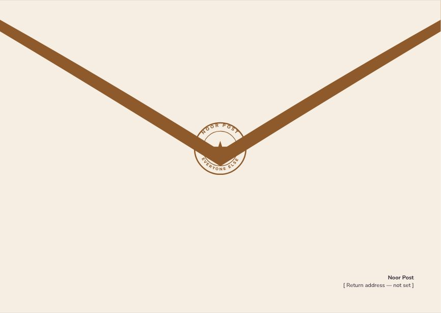
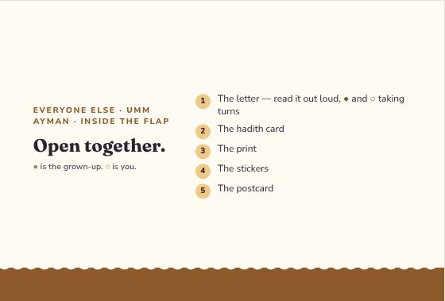
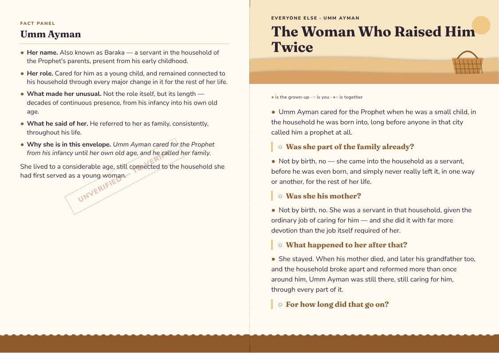
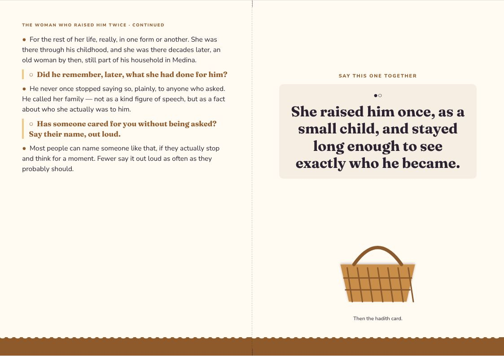
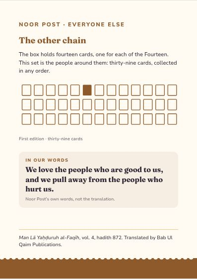
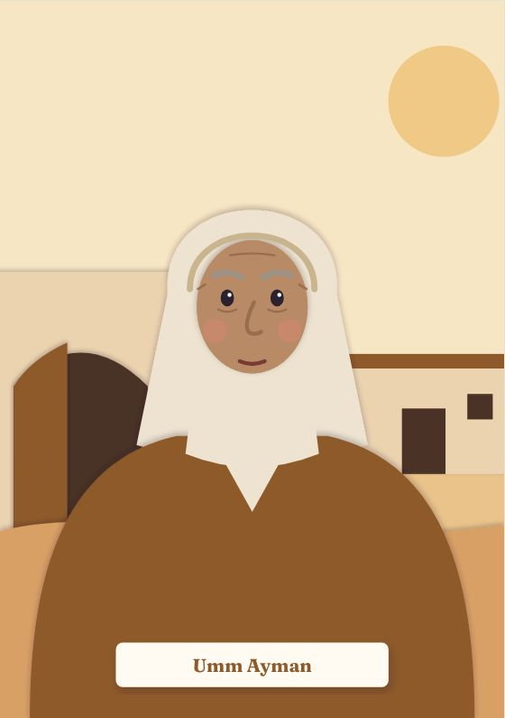
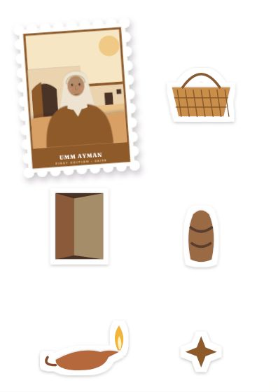
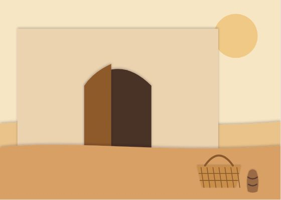

Everyone Else
Umm Ayman
Umm Ayman cared for the Prophet from his infancy until her own old age, and he called her family.
Inside the flap
Open together.
- The letter — read it out loud, ● and ○ taking turns
- The hadith card
- The print
- The stickers
- The postcard
● is the grown-up. ○ is you.
The Woman Who Raised Him Twice
● the grown-up · ○ the child · ●○ together
●Umm Ayman cared for the Prophet when he was a small child, in the household he was born into, long before anyone in that city called him a prophet at all.
○Was she part of the family already?
●Not by birth, no — she came into the household as a servant, before he was even born, and simply never really left it, in one way or another, for the rest of her life.
○Was she his mother?
●Not by birth, no. She was a servant in that household, given the ordinary job of caring for him — and she did it with far more devotion than the job itself required of her.
○What happened to her after that?
●She stayed. When his mother died, and later his grandfather too, and the household broke apart and reformed more than once around him, Umm Ayman was still there, still caring for him, through every part of it.
○For how long did that go on?
●For the rest of her life, really, in one form or another. She was there through his childhood, and she was there decades later, an old woman by then, still part of his household in Medina.
○Did he remember, later, what she had done for him?
●He never once stopped saying so, plainly, to anyone who asked. He called her family — not as a kind figure of speech, but as a fact about who she actually was to him.
○Has someone cared for you without being asked? Say their name, out loud.
●Most people can name someone like that, if they actually stop and think for a moment. Fewer say it out loud as often as they probably should.
●○She raised him once, as a small child, and stayed long enough to see exactly who he became.
Letter, reverse
UMM AYMAN
●Her name. Also known as Baraka — a servant in the household of the Prophet's parents, present from his early childhood.
●Her role. Cared for him as a young child, and remained connected to his household through every major change in it for the rest of her life.
●What made her unusual. Not the role itself, but its length — decades of continuous presence, from his infancy into his own old age.
●What he said of her. He referred to her as family, consistently, throughout his life.
●Why she is in this envelope. Umm Ayman cared for the Prophet from his infancy until her own old age, and he called her family.
She lived to a considerable age, still connected to the household she had first served as a young woman.
Hadith card · First Edition 06 / 39
Hearts are naturally inclined to love those who do good to them and to dislike those who harm them.
Man Lā Yaḥḍuruh al-Faqīh, vol. 4, hadith 872 · trans. Bab Ul Qaim Publications
A saying of the Prophet, matched to care that lasts a whole life.
The design
Everyone Else — one style for the line
Every companion envelope shares one style, so the thirty-nine belong together: each front carries its person as a stamp. Every item at true size → · Print PDF


















The artwork fixes composition, colour and medium for every item; final illustration is still to be commissioned. The fact panel is still to verify.